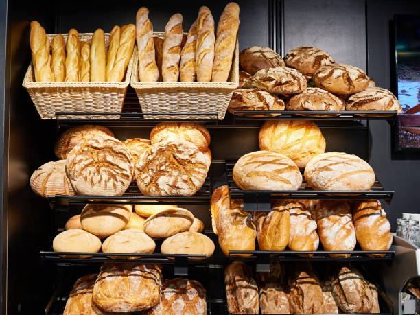
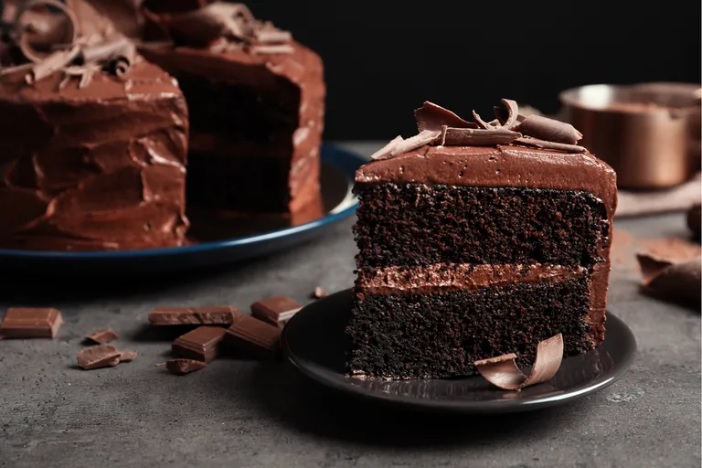
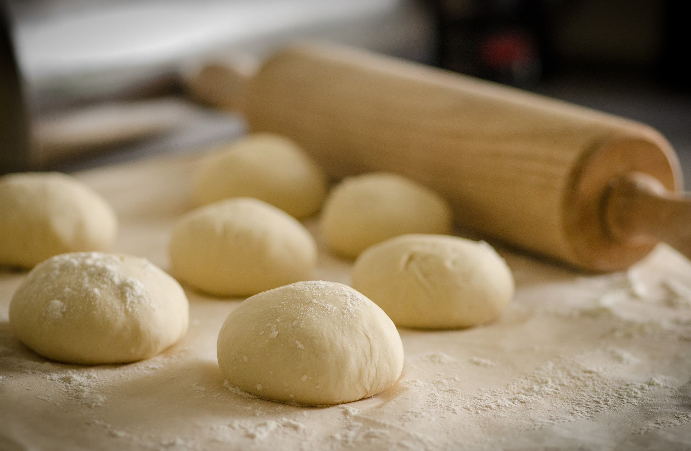
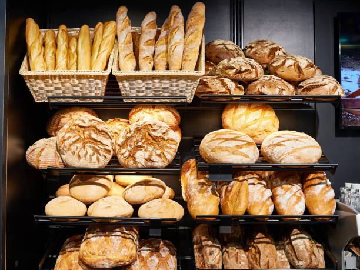
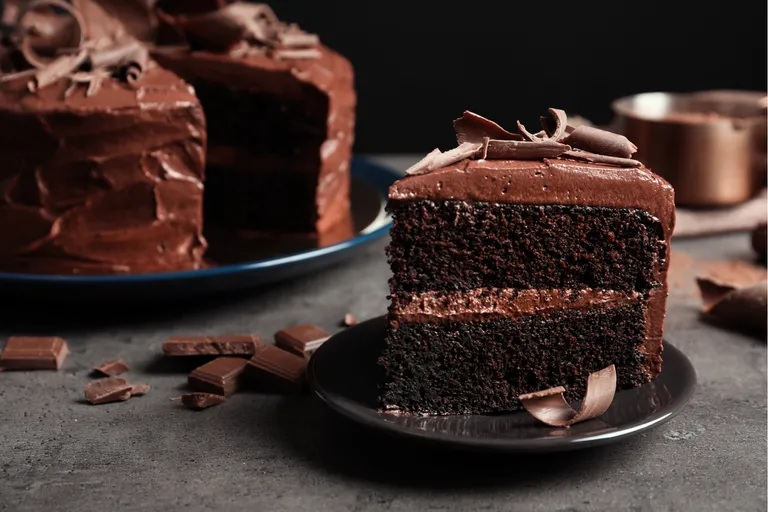
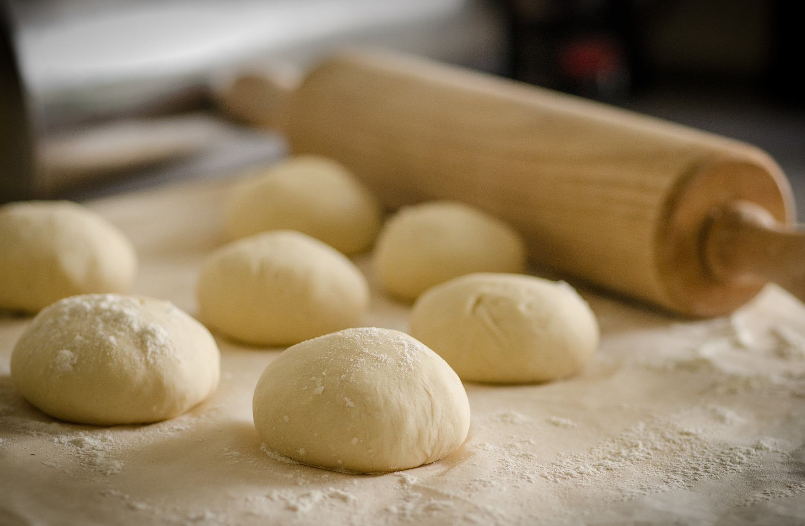

Nuestra Historia
Sabaris Bakery&Co nació como un emprendimiento casero en el año 1998 a manos de su dueña Martinez Gabriela siendo una heladería artesanal ubicado en el barrio de San Cristóbal,en 2006 pasó a manos de su amiga Leiva Monica quien después de 10 años a su mando decidió retornarla a su principal dueña. Sabaris Bakery&Co cerró sus puertas en agosto del 2017 y reabrió en febrero del 2018. Hoy en día ocupa el nombre del local la hija de la dueña inicial, quien como estudiante de Gastronomía género un convenio con el Instituto Gastronómico Argentino para la contratación de estudiantes experimentados, dándoles la oportunidad de crecer en el rubro, siendo ejemplo para un buen desempeño laboral, con un ambiente sano y familiar. Como misión queremos hacer sentir a nuestro cliente parte de esta familia, que se preocupa y ocupa de hacerle pasar un buen momento,probando especialidades únicas con una excelente calidad, sabor y aromas.
 




